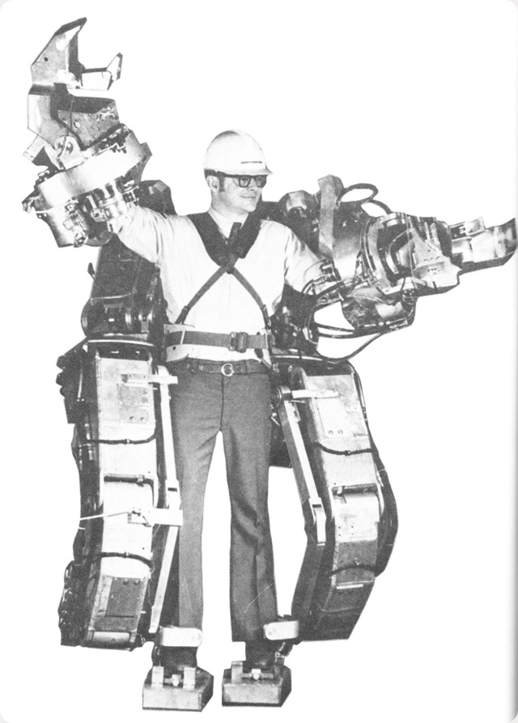

Par définition, une veille technologique consiste à surveiller les évolutions techniques, innovations dans un secteur donnée. Elle comprend la surveillance, la collecte, le partage et la diffusion d'information permettant d'anticiper ou de s'informer sur des changements en matière de recherche, développement, brevet, etc...
Pour ma veille technologique, j'ai décidé de choisir le sujet des exosquelettes.
Les exosquelettes sont des machines fixés à certaines parties du corps afin de faciliter
certaines actions de l'utilisateur.
Les premiers exosquelettes voient le jour dans les années 1960 et sont inventés pour le domaine
de l'industrie.

Premier exosquelette motorisé
Cette invention a pris de l'ampleur au fil des années si bien qu'aujourd'hui,
nous pouvons en trouver dans le domaine de la santé ou encore de la défense.
Outils utilisés pour réaliser la veille :
- Google Alert
- Feedly
Articles/sites internet lus/visités :
* Le permier exosquelette
* Résultat d'étude concernant l'exosquelette Rex Rehab sur des patients atteint de sclérose en plaque
* Développement d'un exosquelette augmentant grandement la force par l'armée américaine